경영지도사-1차-1교시(구) (2018-04-07 기출문제)
1과목: 중소기업관련법령
1. 중소기업기본법상 중소기업 육성에 관한 종합계획(이하 “종합계획”이라 한다.)에 관한 설명으로 옳지 않은 것은?
- 정부는 창의적이고 자주적인 중소기업의 성장을 지원하기 위하여 종합계획을 3년마다 수립·시행하여야 한다.
- 정부가 종합계획을 수립하거나 변경하는 경우에는 국회의 심의를 거쳐야 한다.
- 종합계획에는 중소기업 육성 정책의 기본목표와 추진방향이 포함되어야 한다.
- 정부는 종합계획에 따라 매년 정부와 지방자치단체가 중소기업을 육성하기 위하여 추진할 중소기업시책에 관한 계획을 수립하여 관련 예산과 함께 3월까지 국회에 제출하여야 한다.
- 종합계획의 수립·시행에 필요한 사항은 대통령령으로 정한다.
(정답률: 알수없음)

2. 중소기업기본법상 주된 업종별 평균매출액 등의 소기업 규모 기준에 해당하지 않는 것은?
- 평균매출액등 10억원인 산업용 기계 및 장비 수리업
- 평균매출액등 10억원인 보건업 및 사회복지 서비스업
- 평균매출액등 50억원인 정보통신업
- 평균매출액등 100억원인 의료, 정밀, 광학기기 및 시계 제조업
- 평균매출액등 100억원인 의료용 물질 및 의약품 제조업
(정답률: 알수없음)
3. 중소기업기본법상 “임원”에 해당하지 않는 자는?
- 주식회사의 등기된 이사
- 유한회사의 등기된 이사
- 주식회사의 등기된 사외이사
- 주식회사 및 유한회사이외의 기업의 무한책임사원
- 주식회사 및 유한회사이외의 기업의 업무집행자
(정답률: 알수없음)
4. 중소기업기업법상 정부의 책무로 명시되지 않은 것은?
- 중소기업의 교섭력 확보를 위한 경쟁제한적인 공동행위 지원
- 중소기업 제품의 판로 확대를 위한 유통 구조의 현대화
- 중소기업의 창업촉진과 기업가정신의 확산
- 중소기업의 사업 영역을 확보하기 위한 시책의 실시
- 중소기업의 국제화의 촉진
(정답률: 알수없음)
5. 중소기업창업 지원법상 중소기업창업투자회사의 행위제한에 관한 설명으로 옳지 않은 것은?
- 중소기업창업투자회사는 회사의 자산으로 타인을 위하여 담보를 제공하거나 채무를 보증하는 행위를 할 수 없다.
- 중소기업창업투자회사는 자기의 명의로 제3자를 위하여 주식을 취득하거나 자금을 중개하는 행위를 할 수 없다.
- 중소기업창업투자회사는 인수·합병을 목적으로 다른 중소기업창업투자회사의 주식을 취득할 수 없다.
- 중소기업창업투자회사는 자신이 투자한 업체로부터 차입 또는 자산 매각 등 투자행위에 수반되는 정상적인 거래 관계 외의 거래를 통하여 자금을 받는 행위를 할 수 없다.
- 중소기업창업투자회사는 중소기업창업투자조합의 해산이나 그 밖에 중소벤처기업부장관이 인정하는 불가피한 사유가 있는 경우 외에는 자신이 결성한 중소기업투자조합과 거래할 수 없다.
(정답률: 알수없음)
6. 중소기업창업 지원법상 엑셀러레이터에 관한 설명으로 옳은 것은?
- 엑셀러레이터는 지원할 초기창업자를 선발하여 1억원 이상을 투자하여야 한다.
- 엑셀러레이터가 「상법」상의 회상인 경우 납입자본금은 1천만원 이상이어야 한다.
- 엑셀러레이터는 초기창업자에 투자할 목적으로 「벤터기업육성에 관한 특별조치법」에 따른 중소기업창업투자조합을 결성할 수 있다.
- 중소벤터기업부장관은 창업보육센터가 엑셀러레이터로 전환할 경우 필요한 비용의 전부 또는 일부를 지원할 수 있다.
- 엑셀러레이터는 초기창업자의 성공 가능성을 높이기 위하여 1년 이상의 전문보육을 하여야 한다.
(정답률: 알수없음)
7. 중소기업창업 지원법상 사업계획의 승인에 관한 설명으로 옳은 것은?
- 창업자의 사업계획 승인 신청을 받은 시장·군수 또는 구청장이 승인 신청을 받은 날부터 30일 이내에 승인여부를 알려야 한다.
- 창업자가 사업계획의 승인가능성 등에 관한 사전협의를 신청하는 경우 법인의 주소지를 관할 한ㄴ 시장·군수 또는 구청장에게 신청하여야 한다.
- 사업계획의 승인을 받은 자가 승인을 받은 날부터 1년이 지난 날부터 공장의 착공을 하지 아니하는 경우 시장·군수 또는 구청장은 사업계획의 승인을 취소할 수 있다.
- 시장·군수 또는 구청장이 사업계획의 승인과 공장건축허가를 취소하려면 미리 일정한 기간을 정하여 해당 처분 대상자가 사업계획을 변경하거나 공장건축을 하도록 권고한 후 이에 응하지 아니한 경우에만 해당 처분을 하여야 한다.
- 시장·군수 또는 구청장이 사전협의 신청을 받은 경우 그 신청을 받은 날부터 20일 이내에 사업계획의 승인 가능성 등에 관하여 알려야 한다.
(정답률: 알수없음)
8. 중소기업창업 지원법상 중소기업창업투자조합에 관한 설명으로 옳은 것은?
- 중소기업창업투자조합은 조합의 채무에 대하여 무한책임을 지는 2인 이상의 조합원과 출자액을 한도로 하여 유한책임을 지는 유한책임조합원으로 구성한다.
- 중소기업창업투자조합의 투자의무비율을 계산할 때 등록 당시에 납입한 출자금보다 출자금이 증액된 경우에는 그 증액된 증액분에 대한 투자의무비율은 증액일을 기준으로 연차적으로 따로 계산한다.
- 중소기업창업투자조합의 조합원은 출자금액의 전액을 한꺼번에 출자하여야 한다.
- 중소기업창업투자조합의 업무집행조합원은 그 지분의 전부를 타인에게 양도하지 못한다.
- 중소기업창업투자조합이 해산하는 경우 업무집행조합원은 청산인이 될 수 없다.
(정답률: 알수없음)
9. 중소기업창업 지원법상 중소기업창업투자회사에 관한 설명으로 옳지 않은 것은?
- 중소벤처기업부장관은 중소기업창업투자회사가 등록말소 신청을 하면 30일 이내에 관보에 공고하여야 한다.
- 중소기업창업투자회사로서의 지위를 승계한 자는 승계한 날부터 30일 이내에 중소벤처기업부장관에 이를 신고하여야 한다.
- 중소기업창업투자회사가 등록한 사항 중 회사명과 소재지 등 중소벤처기업부령으로 정하는 중요 사항을 변경하려는 경우에는 중소벤처기업부장관에게 등록하여야 한다.
- 중소기업창업투자회사는 조직과 인력, 재무와 손익 등에 관한 사항을 공시하야야 한다.
- 중소기업창업투자회사는 그 사업 수행에 필요한 재원을 충당하기 위하여 자본금과 적립금 총액의 10배의 범위에서 사채를 발행할 수 있다.
(정답률: 알수없음)
10. 중소기업창업 지원법상 창업에 관하여 적용되는 중소기업은? (단, 업종의 분류는 한국표준산업분류를 기준으로 하며, 주된 업종의 기준은 중소기업기본법에 따름)
- 골프장운영업을 주된 업종으로 하는 중소기업
- 무도장운영업을 주된 업종으로 하는 중소기업
- 갬블링 및 베팅업을 주된 업종으로 하는 중소기업
- 상시근로자가 10명인 법인으로서 음식점업을 주된 업종으로 하는 중소기업
- 보험업으로서 정보통신기술을 활용하여 금융서비스를 제공하는 업종을 그 주된 업종으로 하며 그 외 기타 여신금융업을 주된 업종으로 하지 않는 중소기업
(정답률: 알수없음)
11. 중소기업진흥에 관한 법률상 중소벤처기업부장관이 협업지원사업의 대상자를 선정함에 있어서 고려하여야 할 사항이 아닌 것은?
- 협업추진기업의 자본금
- 협업의 안정성
- 사업계획의 실현가능성
- 사업추진능력
- 협업의 추진 필요성 및 협업체 구성의 적절성
(정답률: 알수없음)
12. 중소기업진흥에 관한 법률상 지방중소기업의 육성에 관한 설명으로 옳지 않은 것은?
- 중소벤처기업부장관은 다음 연도의 지역별 중소기업 육성 기본지침을 작성하여야 한다.
- 중소벤처기업부장관은 기본지침을 매년 10월 31일까지 시·도지사에게 전달하여야 한다.
- 시·도지사는 기본지침에 따라 다음 연도의 관할구역 내 지방중소기업의 육성계획을 수립하여 매년 12월 31일까지 중소벤처기업부장관에게 제출하여야 한다.
- 시·도지사는 매년 육성계획의 추진실력을 분석하고 다음 해 2월 말일까지 그 분석 결과를 중소벤처기업부장관에게 제출하여야 한다.
- 중소기업진흥공단이 소유하고 있는 공장을 지방중소기업자에 양도하는 경우에는 30년 이내에 대금을 장기 분할하여 징수할 수 있다.
(정답률: 알수없음)
13. 중소기업진흥에 관한 법률상 중소기업자 등이 단지조성사업의 실시계획의 변경에 관한 승인을 받아야 할 사항에 해당하는 것을 모두 고른 것은?
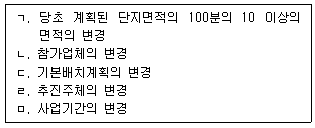
- ㄹ
- ㄱ, ㄴ, ㅁ
- ㄱ, ㄷ, ㅁ
- ㄴ, ㄷ, ㄹ
- ㄱ, ㄴ, ㄷ, ㄹ, ㅁ
(정답률: 알수없음)
14. 중소기업진흥에 관한 법률상 ( )에 들어갈 내용을 바르게 나열한 것은?
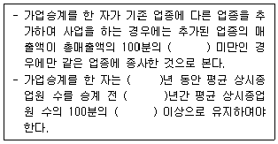
- 30, 2, 2, 50
- 30, 3, 3, 60
- 50, 3, 3, 60
- 50, 5, 5, 70
- 70, 5, 5, 70
(정답률: 알수없음)
15. 중소기업진흥에 관한 법률상 명문장수기업이 되기 위한 요건으로서 사업을 개시한 날부터 주된 업종의 변동없이 계속사업을 유지하여야 하는 기간은?
- 25년
- 30년
- 35년
- 40년
- 45년
(정답률: 알수없음)
16. 중소기업진흥에 관한 법률상 직무수행시 고의로 진실을 감추거나 거짓된 보고를 한 지도사의 벌칙에 해당하는 것은?
- 1년 이하의 징역 또는 1천만원 이하의 벌금
- 2년 이하의 징역 또는 2천만원 이하의 벌금
- 3년 이하의 징역 또는 3천만원 이하의 벌금
- 5년 이하의 징역 또는 5천만원 이하의 벌금
- 7년 이하의 징역 또는 1억원 이하의 벌금
(정답률: 알수없음)
17. 중소기업 기술혁신 촉진법상 중소기업 기술혁신 추진위원회의 심의사항이 아닌 것은?
- 촉진계획의 수립에 관한 사항
- 중소기업 기술혁신 지원계획의 수립·시행에 관한 사항
- 기관별 중소기업 기술혁신 지원계획의 종합·조정에 관한 사항
- 시행기관의 장이 중소기업의 기술혁신을 촉진하기 위하여 심의를 요청한 사항
- 중소기업이 제출한 기술혁신 신청계획의 타당성 검토에 관한 사항
(정답률: 알수없음)
18. 중소기업 기술혁신 촉진법상 중소벤처기업부장관이 추진하는 해외규격 획득 지원사업의 내용이 아닌 것은?
- 해외규격의 보급
- 해외규격의 확보
- 해외규격 획득에 필요한 상담 지원사업
- 해외규격의 품질평가
- 해외규격 획득에 필요한 전문인력 양성사업
(정답률: 알수없음)
19. 중소기업 기술혁신 촉진법상 중소기업 기술혁신 추진위원회에 관한 설명으로 옳지 않은 것은?
- 위원 중 공무원이 아닌 위원의 임기는 2년으로 하되, 연임할 수 없다.
- 위원장은 민간위원 중에서 호선(互選)한다.
- 회의는 재거위원 과반수의 출석과 출석위원 과반수의 찬성으로 의결한다.
- 기술혁신 추진위원회의 사무처리를 위하여 간사 1인을 둔다.
- 위원장 1명을 포함한 20명 이상 30명 이하의 위원으로 구성한다.
(정답률: 알수없음)
20. 중소기업 기술혁신 촉진법상 중소기업기술통계 작성대상 업종을 모두 고른 것은?
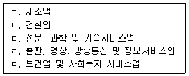
- ㄱ, ㄴ, ㄹ
- ㄱ, ㄴ, ㅁ
- ㄱ, ㄷ, ㄹ
- ㄴ, ㄷ, ㅁ
- ㄷ, ㄹ, ㅁ
(정답률: 알수없음)
21. 벤처기업육성에 관한 특별조치법상 산업재산권 등의 가격을 평가하는 기술평가기관에 해당하지 않는 것은?
- 한국산업기술평가관리원
- 한국과학기술정보연구원
- 한국과학기술연구원
- 한국에너지기술평가원
- 한국산업기술진흥원
(정답률: 알수없음)
22. 벤처기업육성에 관한 특별조치법상 신기술창업전문회사를 설립할 수 없는 기관은?
- 국공립연구기관
- 「산업교육진흥 및 산학연 협력촉진에 관한 법률」에 따른 산학협력단
- 「상법」에 따라 설립된 과학 또는 산업기술관련 주식회사
- 정부출연연구기관
- 「산업기술혁신 촉진법」에 따른 전문생산기술연구소
(정답률: 알수없음)
23. 벤처기업육성에 관한 특별조치법상 벤처기업 육성을 위한 추진체계의 구축에 관한 설명으로 옳지 않은 것은?
- 중소벤처기업부장관은 벤처기업을 체계적으로 육성하고 육성계획을 효율적으로 수립·추진하기 위하여 2년마다 벤처기업의 활동현황 및 실태 등에 대한 조사를 하고 그 결과를 공표하여야 한다.
- 중소벤처기업부장관은 육성계획의 수립과 시행을 위하여 필요한 경우에는 관계 중앙행정기관의 장과 벤처기업 육서에 관련된 기관 또는 단체 대표자 등에 대하여 자료의 제출이나 의견의 진술을 요청할 수 있다.
- 중소벤처기업부장관은 벤처기업을 육성하기 위하여 3년마다 벤처기업 육성계획을 관계 중앙 행정기관의 장과 협의를 거쳐 수립·시행하여야 한다.
- 중소벤처기업부장관은 벤처기업 관련 정보를 종합적으로 관리하고 벤처기업 간의 협력기관을 구축하여 벤처기업 활동에 유용한 정보를 제공하기 위하여 종합관리시스템을 구축·운영할 수 있다.
- 벤처기업 제품의 공공구매 확대에 관한 사항 및 창업지원에 관한 사항 등은 육성계획에 포함되어야 한다.
(정답률: 알수없음)
24. 벤처기업육성에 관한 특별조치법상 중소벤처기업 인수합병 지원센터의 업무에 해당하지 않는 것은?
- 중소벤처기업의 인수합병계획의 수립 지원에 관한 사항
- 중소벤처기업의 인수합병을 위한 기업정보의 수집·제공 및 컨설팅 지원에 관한 사항
- 중소벤처기업의 인수합병에 필요한 기술가치평가모델의 개발 및 보급에 관한 사항
- 중소벤처기업의 인수합병에 필요한 자금의 연계지원에 관한 사항
- 중소벤처기업의 인수합병 전문가 양성 및 교육에 관한 사항
(정답률: 알수없음)
25. 벤처기업육성에 관한 특별조치법상 전담회사에 관한 설명으로 옳지 않은 것은?
- 전담회사의 정관을 변경할 때는 중소벤처기업부장관의 인가를 받아야 한다.
- 전담회사에 관하여 이 법에 규정한 것 외에는 「상법」중 주식회사에 관한 규정을 준용한다.
- 전담회사는 사업수행을 위하여 필요하면 정부, 정부가 설치한 기금 또는 국내외 금융기관으로부터 자금을 차입할 수 있다.
- 전담회사는 해외젠처투자자금의 유치 지원 업부 등을 영위한다.
- 중소기업창업 및 진흥기금을 관리하는 자는 전담회사에 출자할 수 없다.
(정답률: 알수없음)
26. 벤처기업육성에 관한 특별조치법상 한국벤처투자조합에 관한 설명으로 옳지 않은 것은?
- 한국벤처투자조합은 모든 조합원에게 투자수익에 따른 성과보수를 지급할 수 있다.
- 중소기업창업투자회사는 중소기업 또는 벤처기업을 인수합병하는 경우 모태조합으로부터 출자를 받지 아니하고 한국벤처투자조합을 결성할 수 있다.
- 한국벤처투자조합의 업무집행조합원은 그 업무를 집행할 때 자금차입·지급보증 또는 담보를 제공하는 행위를 할 수 없다.
- 업무집행조합원은 자신이 파산한 경우에는 한국벤처투자조합을 탈퇴할 수 있다.
- 한국벤처투자조합의 해산 당시의 출자금액을 초과하는 채무는 업무진행조합원이 변제하여야 한다.
(정답률: 알수없음)
27. 여성기업지원에 관한 법률에 대한 설명으로 옳지 않은 것은?
- 중소벤처기업부장관은 여성기업의 활동을 촉진하기 위한 기본계획을 매년 수립하고 이를 추진하여야 한다.
- 중소벤처기업부장관은 여성기업의 활동 현황 및 실태를 파악하기 위하여 매년 실태 조사를 하고 그 결과를 공표하여야 한다.
- 중소벤처기업부장관은 여성의 창업을 촉진하기 위하여 창업보육센터사업자를 지정할 때에는 여성을 위한 창업보육센터사업자를 우선 지정할 수 있다.
- 한국여성경제인협회는 법인으로 설립한다.
- 국가는 한국여성경제인협회의 사업을 위하여 필요한 경우에는 「국유재산법」또는「공유재산 및 물품 관리법」에도 불구하고 국유재산과 공유재산을 무상으로 협회에 대부할 수 있다.
(정답률: 알수없음)
28. 여성기업지원에 관한 법률상 균형성장촉진위원회의 위원에 해당하지 않는 자는?
- 기획재정부차관
- 과학기술정보통신부차관
- 조달청장
- 중소기업진흥공단의 이사장
- 신용보증기금의 이사장
(정답률: 알수없음)
29. 소상공인 보호 및 지원에 관한 법률상 소상공인의 구조고도화 지원사업에 해당하는 것을 모두 고른 것은?
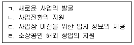
- ㄱ
- ㄴ, ㄷ
- ㄷ, ㄹ
- ㄱ, ㄴ, ㄹ
- ㄱ, ㄴ, ㄷ, ㄹ
(정답률: 알수없음)
30. 소상공인 보호 및 지원에 관한 법률상 소상공인시장진흥기금에 관한 설명으로 옳은 것은?
- 기금의 회계연도는 소상공인시장진흥공단 이사회의 의결에 따라 정한다.
- 중소벤처기업부장관은 소상공인시장진흥기금을 사용하는 자가 부정한 방법으로 기금을 지원받은 경우 국세 체납처분의 예에 따라 기금을 환수할 수 있다.
- 기금의 관리·운용에 관한 주요 사항을 심의하기 위하여 소상공인시장진흥공단에 기금운용위원회를 둔다.
- 소상공인시장진흥공단은 기금의 회계를 공단의 회계와 통합하여 회계처리하여야 한다.
- 소상공인시장진흥공단은 매 회계연도의 기금 결산보고에 관련 서류를 첨부하여 다음 회계 연도 2월말까지 기금운영위원회에 제출하여야 한다.
(정답률: 알수없음)
31. 중소기업 사업전환 촉진에 관한 특별법에 대한 설명으로 옳지 않은 것은?
- 중소벤처기업부장관은 중소기업사업전환촉진계획을 2년마다 수립·시행햐여야 한다.
- 사업전환을 하려는 중소기업자는 사업전환계획을 중소벤처기업부장관에게 제출하여 승인을 받을 수 있다.
- 중소벤처기업부장관은 승인기업의 사업전환계획의 이행 여부와 실적 등을 일년에 한 번 이상 조사햐여야 한다.
- 승인기업이 사업전환계획을 중단하려면 중소벤처기업부장관의 승인을 받아야 한다.
- 중소벤처기업부장관은 승인기업의 사업전환계획의 이행이 어렵다고 판단하면 해당 승인기업에 그 계획의 변경이나 중단을 권고할 수 있다.
(정답률: 알수없음)
32. 중소기업 사업전환 촉진에 관한 특별법상 승인기업에 현물출자하는 경우 그 주식의 가격을 평가하는 기관에 해당하지 않는 것은?
- 「자본시장과 금융투자업에 관한 법률」에 따른 증권의 인수 및 그 중개·주선업무의 인가를 받은 투자매매업자
- 「자본시장과 금융투자업에 관한 법률」에 따라 신용평가업인가를 받은 신용평가회사
- 「공인회계사법」에 따른 회계법인으로서 소속 공인회계사의 수가 30명 이상인 회계법인
- 「기술보증기금법」에 따른 기술보증기금
- 「신용보증기금법」에 따른 신용보증기금
(정답률: 알수없음)
33. 다음 ( )에 들어갈 숫자를 바르게 연결한 것은?
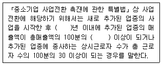
- 1, 10
- 2, 20
- 3, 20
- 3, 30
- 4, 30
(정답률: 알수없음)
34. 중소기업 사업전환 촉진에 관한 특별법상 중소벤처기업부장관이 지방중소벤처기업청장에게 위임할 수 있는 권한에 해당하지 않는 것은?
- 사업전환계획의 승인
- 사업전환계획의 변경승인
- 사업전환계획의 이행실적조사
- 사업전환계획 승인의 취소
- 승인기업의 장부·서류 등의 검사에 관한 사항
(정답률: 알수없음)
35. 중소기업 인력지원 특별법에 관한 설명으로 옳은 것은?
- 중소벤처기업부장관은 중소기업 인력지원 기본계획을 관계 중앙행정기관의 장의 의견을 들어 3년마다 수립하여야 한다.
- 고용노동부장관은 미취업자를 대상으로 산업현장에서 필요한 실무교육과 현장연수를 받게 한 후 중소기업에 채용을 알선하는 사업을 할 수 있다.
- 중소벤처기업부장관은 15세 이상 34세 이하인 미취업자의 중소기업 취업을 촉진하기 위하여 이들을 고용하는 중소기업에 고용장려금을 지급할 수 있다.
- 중소벤처기업부장관이 중소기업의 우수인력 채용 및 육성을 촉진하기 위하여 지정한 인재육성형 중소기업의 유효기간은 지정을 받은 날부터 5년으로 한다.
- 중소벤처기업부장관은 인재육성형 중소기업으로 지정을 받은 자가 거짓이나 그 밖의 부정한 방법으로 지정을 받은 경우에는 그 지정을 취소하여야 한다.
(정답률: 알수없음)
36. 중소기업 인력지원 특별법상 중소기업 핵심인력 성과보상기금을 조성하기 위한 재원에 해당하지 않는 것은?
- 중소기업이 부담하는 기여금
- 중소기업 핵심인력이 납부하는 공제납입금
- 중소기업창업 및 진흥기금의 운용으로 발생하는 수익금
- 성과보상기금의 관리 및 운용에 필요한 차입금
- 중소기업 또는 그 밖의 자의 출연금
(정답률: 알수없음)
37. 중소기업 인력자원 특별법상 중소기업의 인력지원을 받을 수 없는 업종은? (단, 업종의 분류는 한국표준산업분류를 따름)
- 도매 및 소매업
- 부동산업
- 숙박 및 음식점업
- 수리 및 기타 개인서비스업
- 교육서비스업
(정답률: 알수없음)
38. 중소기업 인력지원 특별법상 중소기업으로의 인력유입을 위한 환경조성 사업으로 명시되지 않은 것은?
- 정부는 여러 중소기업이 공동으로 설치·운영하는 「영유아보육법」상의 어린이집의 설치·운영에 필요한 경비의 지원을 할 수 있다.
- 정부는 중소기업으로의 인력유입을 위해 필요한 경우 국유재산과 공유재산을 무상으로 대부할 수 있다.
- 정부는 근로시간 단축에 따라 생산성을 높이기 위한 중소기업의 설비투자를 지원할 수 있다.
- 정부는 중소기업에 근무하는 근로자의 임금 또는 복지 수준을 향상시키기 위하여 사업주와 근로자 간에 성과를 공유하는 제도를 도입한 중소기업을 우대하여 지원할 수 있다.
- 정부 및 공공기관의 장은 전문기술인력 및 전문기능인력에 대하여 공공시설 이용 시 우대하는 등의 우대조치를 할 수 있다.
(정답률: 알수없음)
39. 장애인기업활동 촉진법상 장애인기업에 관한 설명으로 옳지 않은 것은?
- 중소벤처기업부장관은 장애인기업의 활동 현황 및 실태를 파악하기 위하여 2년마다 실태조사를 하고 그 결과를 공표하여야 한다.
- 공공기관의 장이 「중소기업제품 구매촉진 및 판로지원에 관한 법률」에 따라 작성하는 구매계획에는 장애인기업제품의 구매계획을 구분하여 포함시켜야 한다.
- 장애인기업이 아닌 자로서 부정한 방법으로 이 법에 따른 지원을 받은 자는 3년 이하의 징역 또는 3천만원 이하의 벌금에 처한다.
- 장애인기업 확인의 유효기간은 장애인 대표자의 장애등급 또는 상이등급 재판정 기한이 발급일부터 2년 이내에 있는 경우에는 발급일부터 재판정 기한까지로 한다.
- 중소벤처기업부장관은 장애인기업의 확인을 받은 자가 폐업 등의 사유로 기업활동을 하지 아니하게 된 경우 장애인기업의 확인을 취소하여야 한다.
(정답률: 알수없음)
40. 장애인기업활동 촉진법상 한국장애경제인협회 또는 이와 비슷한 명칭을 사용한 경우 과태료 부과금액은?
- 100만원 이하
- 200만원 이하
- 300만원 이하
- 500만원 이하
- 1,000만원 이하
(정답률: 알수없음)
2과목: 경영학
41. 경영의 효율성(efficiency)에 관한 설명으로 옳지 않은 것은?
- 투입량에 대한 산출량의 비율이다.
- 조직목표의 달성정도와 관련이 있는 개념이다.
- 자원의 낭비 없이 일을 올바르게 수행하는 것(doing things right)을 의미한다.
- 최소한의 자원 투입으로 최대한의 산출을 얻는 것을 지향한다.
- 효율성이 높아도 목표를 달성하지 못하는 경우가 있다.
(정답률: 알수없음)
42. 경영이론의 발전과정에서 연구자들과 연구내용의 연결이 옳지 않은 것은?
- 길브레스부부(F. B. & L. M. Gilbreth) - 동작연구
- 페이율(H. Fayol) - 관리자의 의무
- 메이요(E. Mayo) - 호손실험
- 맥그리거(D. McGregor) - XY이론
- 아지리스(C. Argyris) - 상황이론
(정답률: 알수없음)
43. 인간두뇌의 한계와 정보부족 등으로 인해 완전한 합리성은 불가능하므로 제한된 합리성에 근거하여 의사결정을 하게 된다는 모형은?
- 경제인모형
- 만족모형
- 점증모형
- 최적모형
- 혼합모형
(정답률: 알수없음)
44. 미국의 랜드연구소에서 개발한 의사결정기법으로, 전문가들을 한 장소에 대면시키지 않아 상호간의 영향을 배제하면서 전문적인 견해를 얻는 방법은?
- 제3자조정기법(third party peace-making technique)
- 상호작용집단법(interaction group method)
- 브레인스토밍(brain storming)
- 텔파이기법(delphi technique)
- 명목집단기법(nominal group technique)
(정답률: 알수없음)
45. 다수의 이익을 위해 소수의 이익은 희생될수 있다는 전제 하에 최대다수의 최대행복을 기본원리로 삼는 윤리적 의사결정 접근법은?
- 공리주의 접근법
- 상대주의 접근법
- 도덕적 권리 접근법
- 사회적 정의 접근법
- 의무론적 접근법
(정답률: 알수없음)
46. 기업 전체 차원에서 수립되는 기본전략(grand strategy)의 유형이 아닌 것은?
- 집중화전략
- 안정전략
- 축소전략
- 방어전략
- 성장전략
(정답률: 알수없음)
47. 다음과 같은 전략유형은?
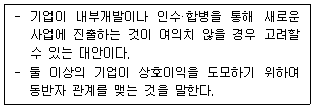
- 구조조정
- 전략적 제휴
- 직접확장전략
- 청산전략
- 영업양도전략
(정답률: 알수없음)
48. 포터(M. E. Porter)가 제시한 가치사슬(value chain)에서 주 활동 부문(primary activities)에 해당하지 않는 것은?
- 구매활동
- 생산활동
- 인적자원관리활동
- 물류활동
- 서비스활동
(정답률: 알수없음)
49. 조직구조의 유형에 관한 설명으로 옳지 않은 것은?
- 매트릭스 조직(matrix organization)은 전통적 기능식 조직에 프로젝트 조직을 덧붙인 조직이다.
- 프로젝트 팀 조직(project team organization)은 조직 내의 여러 하위 단위의 결합된 노력이 필요한 특정과업(프로젝트)을 수행하기 위하여 형성된 임시적 조직이다.
- 자유형 조직(free-from organization)은 조직이 생존하기 위하여 필요하면 끊임없이 형태를 변화시키는 아메바와 같은 조직이다.
- 네트워크 조직(network organization)은 조직 외부에서 수행하던 기능들을 계약을 통하여 조직 내부에서 수행하도록 설계된 조직이다.
- 팀 조직(team organization)은 팀장 중시으로 팀의 자율성과 팀원 간의 유기적 관계를 유지하면서 팀의 목표를 추구해 나가는 슬림화된 수평적 조직이다.
(정답률: 알수없음)
50. 모티베이션(motivation) 내용이론에 속하지 않는 것은?
- 메슬로우(A. H. Maslow)의 욕구단계이론
- 아담스(J. S. Adams)의 공정성 이론
- 허즈버그(F. Herzberg)의 2요인이론
- 알더퍼(C. P. Alderfer)의 ERG 이론
- 맥클리랜드(D. C. McClelland)의 성취동기이론
(정답률: 알수없음)
51. 블레이크(R. R. Blake)와 모우튼(J. S. Mouton)의 리더십 관리격자모델의 리더 유형에 관한 설명으로 옳지 않은 것은?
- (1, 1)형은 조직구성원으로서 자리를 유지하는데 필요한 최소한의 노력만을 투입하는 방관형(무관심형) 리더이다.
- (1, 9)형은 구조주도행동을 보이는 컨트리클럽형(인기형) 리더이다.
- (9, 1)형은 과업상의 능력을 우선적으로 생각하는 과업형 리더이다.
- (5, 5)형은 과업의 능률과 인간적 요소를 절충하여 적당한 수준에서 성과를 추구하는 절충형(타협형) 리더이다.
- (9, 9)형은 인간과 과업에 대한 관심이 모두 높은 팀형 리더이다.
(정답률: 알수없음)
52. 변혁적 리더십의 특징에 해당하지 않는 것을 모두 고른 것은?
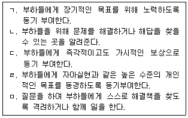
- ㄱ, ㄴ
- ㄱ, ㅁ
- ㄴ, ㄷ
- ㄷ, ㄹ
- ㄹ, ㅁ
(정답률: 알수없음)
53. 집단 내에 중심적인 인물 또는 리더가 존재하여 구성원들 간의 정보전달이 그 한 사람에게 집중되는 커뮤니케이션 네트워크 유형은?
- 연쇄형
- 수레바퀴형
- Y형
- 완전연결형
- 원형
(정답률: 알수없음)
54. 허즈버그(F. Herzberg)의 2요인이론에서 동기요인에 해당하지 않는 것은?
- 직무에 대한 성취
- 직무에 대한 인정
- 직무자체
- 능력의 신장
- 감독
(정답률: 알수없음)
55. 조직문화에 의하여 설정된 규범, 공유된 가치, 전통, 신념, 의식, 기대 등을 통하여 이루어지는 통제의 유형은?
- 자율 통제
- 관료적 통제
- 시장 통제
- 클랜(clan) 통제
- 스크리닝(screening) 통제
(정답률: 알수없음)
56. 타인에 대한 평가에 평가자 자신의 감정이나 특성을 귀속 또는 전가시키는데서 발생하는 오류는?
- 후광효과
- 상동적 태도
- 주관의 객관화
- 선택적 지각
- 관대화 경향
(정답률: 알수없음)
57. 임금체계에 관한 설명으로 옳지 않은 것은?
- 임금체계란 기업의 임금총액을 종업원 수로 나눈 것이다.
- 직무급이란 직무들을 평가하여 직무의 상대적 가치에 따라 임금을 결정하는 것이다.
- 연공급이란 종업원의 근속연수, 학력 등을 기준으로 임금을 결정하는 것이다.
- 직능급은 종업원이 보유하고 있는 직무수행능력을 기준으로 임금을 결정하는 것이다.
- 임금의 내부공정성은 기업이 허용임금 총액을 종업원들에게 어떻게 배분하느냐와 관련이 있다.
(정답률: 알수없음)
58. 관리적 인력을 선발 할 때 주로 사용하며, 다수의 지원자를 특정 장소에 모아놓고 여러 종류의 선발도구를 적용하여 지원자를 평가하는 방법은?
- 서열법
- 체크리스트법
- 중요사건기술법
- 평가센터법
- 행위관찰척도평가법
(정답률: 알수없음)
59. 불건전한 수요상황에서 지나친 수요를 가급적 억제하거나 소멸시키기 위하여 필요한 마케팅은?
- 전환마케팅(conversional marketing)
- 자극마케팅(stimulation marketing)
- 재마케팅(remarketing)
- 유지마케팅(maintenance marketing)
- 대항마케팅(counter marketing)
(정답률: 알수없음)
60. 시장세분화의 유형 중 인구통계적 세분화에 포함되는 요소가 아닌 것은?
- 사용률
- 연령
- 직업
- 교육수준
- 소득
(정답률: 알수없음)
61. 기업의 장기채무지급능력을 나타내는 레버리지비율(자본구조비율)에 해당되지 않는 것은?
- 당좌비율
- 부채비율
- 자기자본비율
- 비유동비율
- 이자보상비율
(정답률: 알수없음)
62. (주)경지사의 보통주 주가는 100원, 순이익 10,000원, 평균발행주식(보통주) 500주, 우선주배당금은 없을 경우의 주가수익비율(PER)은? (단, 주어진 조건 외에 다른 조건은 가정하지 않음)
- 1(배)
- 2(배)
- 3(배)
- 4(배)
- 5(배)
(정답률: 알수없음)
63. 서비스의 특성으로 옳지 않은 것은?
- 노동집약성
- 무형성
- 비분리성
- 소멸성
- 동질성
(정답률: 알수없음)
64. 자재소요계획(MRP)을 효과적으로 수립하고 원활히 실행하기 위해서 직접적으로 필요한 정보가 아닌 것은?
- 총괄생산계획(aggregate production planning)
- 자재명세서(bill of materials)
- 재고기록철(inventory record file)
- 자재조달기간(lead time)
- 주일정계획(master production scheduling)
(정답률: 알수없음)
65. (주)경지사에서는 연중 일정하게 판매되고 있는 A제품에 대하여 해리스(F. W. harris)의 경제적 주문량 모형을 활용하여 최적의 주문량을 결정하고 있다. 연간 수요는 2,000개이며, 1회 주문비용은 2,500원, 개당 연간 재고유지비용은 250원으로 추산하고 있을 때의 평균재고수준은?
- 50개
- 100개
- 150개
- 200개
- 250개
(정답률: 알수없음)
66. 금융기관들이 한 자리에 모여 협약을 체결한 다음 그에 따라 채권을 출자로 전환하거나, 원리금 상환을 유예시키거나 또는 신규자금을 지원하여 기업을 회생시키는 제도는?
- 부도(dishonor)
- 협조융자(joint financing)
- 인수합병(merger&acquisition)
- 워크아웃(work-out)
- 턴어라운드(turn-around)
(정답률: 알수없음)
67. m-Business로 창출되는 서비스에 해당하지 않는 것은?
- 위치 지리정보 서비스
- 위치 확인 서비스
- 개인 특화 서비스
- 콘텐츠 제공 서비스
- 인터넷 TV 서비스
(정답률: 알수없음)
68. 노나카(I. Nonaka)의 지식변환 과정 중 다음의 설명에 해당하는 것은?
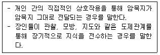
- 연결화(combination)
- 외부화(externalization)
- 사회화(socialization)
- 내면화(internalization)
- 정보화(information)
(정답률: 알수없음)
69. 사업구조 재구축을 통해 기업의 미래 지향적인 비전을 달성하고자 하는 경영기법은?
- 가치공학(value engineering)
- 리엔지니어링(reengineering)
- 리스트럭처링(restructuring)
- 벤치마킹(benchmarking)
- 아웃소싱(outsourcing)
(정답률: 알수없음)
70. 원자재가 필요한 회사가 인터넷 온라인을 통해 불특정 다수의 기업으로부터 입찰을 받아서 공급회사를 결정하는 전자상거래 형태는?
- B2B
- C2C
- B2C
- G2C
- B2G
(정답률: 알수없음)
71. 조직 내의 인적자원들이 보유하고 있는 지식을 체계화하고 서로가 공유하기 위하여 구축하는 시스템은?
- CRM
- FMS
- ERP
- KMS
- SCM
(정답률: 알수없음)
72. 호손(Hawthorne)실험과 관련한 설명으로 옳은 것은?
- 작업자는 임금 등 경제적 요인에 의해서 동기화 된다.
- 작업자의 생산성은 작업환경 및 작업시간과 밀접한 연관이 있다.
- 명확한 업무설계와 조직설계가 생산성 향상의 주요 요인이다.
- 공식조직에 비해 비공식조직은 성과에 영향을 주지 않는다.
- 작업자는 단지 관심을 기울여주기만 해도 성과가 개선된다.
(정답률: 알수없음)
73. 베버(M. Weber)의 이상적인 관료제의 특징으로 옳지 않은 것은?
- 분업화와 전문화
- 명확한 권한 체계
- 문서화된 공식적 규칙과 절차
- 전문적 자격에 근거한 공식적인 선발
- 개인별 특성을 고려한 관리
(정답률: 알수없음)
74. 페이욜(H. Fayol)이 제시한 경영조직의 일반원칙으로 옳지 않은 것은?
- 명령일원화의 원칙
- 분업의 원칙
- 동작경제의 원칙
- 권한과 책임의 원칙
- 집권화의 원칙
(정답률: 알수없음)
75. 민츠버그(H. Mintzberg)의 10가지 경영자의 역할에 해당하지 않는 것은?
- 섭외자 역할(liaison role)
- 정보탐색자 역할(monitor role)
- 조직설계자 역할(organizer role)
- 분쟁조정자 역할(disturbance role)
- 자원배분자 역할(resource allocator role)
(정답률: 알수없음)
76. 사회적 책임에 대한 기업의 대응전략에 해당하지 않는 것은?
- 방해전략(obstructive strategy)
- 공격전략(offensive strategy)
- 방어전략(defensive strategy)
- 행동전략(proactive strategy)
- 적응전략(accommodative strategy)
(정답률: 알수없음)
77. 카르텔에 관한 설명으로 옳지 않은 것은?
- 동종 또는 유사업종 기업 간에 수평적으로 맺는 협정이다.
- 참여기업들은 법률적, 경제적으로 완전히 독립되어 협정에 구속력이 없다.
- 공동판매기관을 설립하여 협정에 참여한 기업의 생산품 판매를 규제하기도 한다.
- 아웃사이더가 많을수록 협정의 영향력이 커진다.
- 일반적으로 카르텔은 공정경쟁을 저해하기 때문에 법률로 금지하고 있다.
(정답률: 알수없음)
78. 국제표준화기구(ISO)에서 제정한 기업의 사회적 책임에 관한 국제표준은?
- ISO9000
- ISO14000
- ISO 22000
- ISO 26000
- ISO/IEC 27000
(정답률: 알수없음)
79. 기업환경에서 일반환경(간접환경)에 관한 내용으로 옳지 않은 것은?
- 경쟁기업 출현
- 공정거래법 개정
- 컴퓨팅 기술 발전
- 저출산 시대 심화
- 환율과 원유가격 변동
(정답률: 알수없음)
80. 울산석유화학단지와 같이 여러 개의 생산부문이 유기적으로 결합된 다각적 결합공장 혹은 공장집단은?
- 트러스트(trust)
- 콘체론(concern)
- 콘비나트(kombinat)
- 컨글로메리트(conglomerate)
- 조인트벤처(joint venture)
(정답률: 알수없음)
3과목: 회계학개론
81. 재무정보의 질적 특성 중 근본적 질적 특성을 설명하는 요소가 아닌 것은?
- 예측가치
- 확인가치
- 완전성
- 무오류
- 적시성
(정답률: 알수없음)
82. 재무정보의 질적 특성인 중립성에 관한 설명으로 옳지 않은 것은?
- 재무정보의 선택이나 표시에 편의가 없어야 한다.
- 중립적 정보가 제공되면 행동에 영향을 미치지 않게 된다.
- 미리 의도된 결과를 유도하기 위해 특정 정보를 표시해서는 안 된다.
- 중립적인 정보가 제공되면 이용자의 의사결정에 차이가 나게 할 수 있다.
- 정보가 편파적이 되거나 편중되게 제공되어서는 안 된다.
(정답률: 알수없음)
83. 현금흐름표에 관한 설명으로 옳지 않은 것은?
- 미지급법인세가 증가하면 실제 법인세 납부액은 증가한다.
- 당기순손익에서 조정하는 방식으로 현금흐름표를 작성하는 것은 간접법이다.
- 유상증자에 대한 항목은 재무활동으로 기록된다.
- 현금흐름표는 현금주의 기준으로 작성된 보고서이다.
- 매출채권의 증가는 실질적인 현금회수 여부를 결정하는 것이므로 현금흐름표를 작성 할 때 고려의 대상이 된다.
(정답률: 알수없음)
84. 한국채택국제회계기준(K-IFRS)에서 정의하고 있는 전체 재무제표에 포함되지 않는 것은?
- 기말 재무상태표
- 기간 포괄손익계산서
- 기간 자본변동표
- 주석
- 기간 재무상태변동표
(정답률: 알수없음)
85. 재무상태표에 표시되는 항목으로 옳지 않은 것은?
- 선수수익
- 제품과 재공품의 변동
- 매출채권
- 미지급비용
- 선급보험료
(정답률: 알수없음)
86. 다음 자료를 활요하여 계산된 20×2년의 총자산영업이익률은?
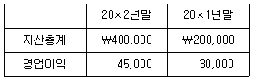
- 10.25%
- 11.25%
- 12.5%
- 15%
- 18%
(정답률: 알수없음)
87. (주)대한의 20×8년초 선급임대료가 ￦400,000, 20×8년말 선급임차료가 ￦500,000이고, 20×8년 포괄손익계산서에 비용으로 인식된 임차료가 ￦900,000일 때 20×8년에 임차료와 관련하여 현금으로 지급된 금액은?
- ￦100,000
- ￦400,000
- ￦500,000
- ￦900,000
- ￦1,000,000
(정답률: 알수없음)
88. (주)한국의 20×1년말 매출채권과 대손충당금은 각각 ￦45,000과 ￦2,300이다. 20×2년의 매출액은 ￦92,000(전액 외상매출)이며, 매출채권 회수액은 ￦109,000이다. (주)한국이 20×2년에 매출채권 기말잔액의 10%를 대손충당금으로 설정할 경우, 20×2년 포괄손익계산서에 보고될 대손상각비는? (단, 20×2년에 대손이 확정되거나 제거된 매출채권의 회수 등은 없다고 가정한다.)
- ￦500
- ￦600
- ￦700
- ￦800
- ￦900
(정답률: 알수없음)
89. (주)대한은 20×1년 4월 1일 건물을 임대하고 1년분 임대수의 ￦18,000을 현금으로 수취하고 이를 모두 20×1년의 수익으로 회계처리하였다. 이 거래와 관련하여 20×1년말에 인식할 수정분개는?
- (차) 임대수익 4,500 (대) 선수임대료 4,500
- (차) 선수임대료 4,500 (대) 임대수익 4,500
- (차) 선수임대료 13,500 (대) 임대수익 13,500
- (차) 임대수익 13,500 (대) 선수임대료 13,500
- (차) 현금 18,000 (대) 임대수익 18,000
(정답률: 알수없음)
90. 회계변경에 관한 설명으로 옳은 것은?
- 재고자산 원가흐름에 대한 가정을 선입선출법에서 평균법으로 변경하는 것은 회계정책의 변경에 해당한다.
- 과거에 발생한 거래와 실질이 다른 거래에 대해 새로운 회계정책을 적용하는 경우는 회계정책의 변경이다.
- 잘못된 회계처리를 발견하여 바로 잡았다면 이는 회계정책의 변경에 해당한다.
- 유형자산의 내용년수 또는 감가상각방법의 변경은 회계정책의 변경에 해당한다.
- 회계변경을 소급법으로 처리하면 재무제표의 기간별 비교가능성과 신뢰성이 제고된다.
(정답률: 알수없음)
91. 회계담당자가 당기 말에 수정분개를 통해 인식해야 할 미수이자 ￦220,000과 이자수익 ￦220,000을 다음과 같이 잘못 처리하였다. 이러한 오류가 당기순이익에 미치는 영향으로 옳은 것은? (단, 수정전시산표상에 미수이자, 이자수익, 이자비용의 잔액은 없다.)
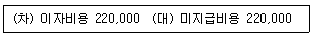
- ￦220,000 과소계상
- ￦220,000 과대계상
- ￦440,000 과소계상
- ￦440,000 과대계상
- 당기순이익에는 영향을 미치지 않는다.
(정답률: 알수없음)
92. 회계감사에 관한 설명으로 옳지 않은 것은?
- 회계감사의 주된 목적은 감사대상 기업의 부정이나 오류를 적발하는 것이다.
- 전문적 지식을 갖는 독립된 제3자를 통하여 재무제표가 회계기준을 준수하여 작성되었는지를 확인하도록 하고 의견을 표명하게 하는 제도이다.
- 재무제표 정보에 대한 신뢰성을 높여준다.
- 감사받은 재무제표는 자본시장의 효율성을 보장하는데 도움을 준다.
- 회계감사를 통해 공인회계사는 재무제표에 대한 감사의견을 표명한다.
(정답률: 알수없음)
93. 상품에 관한 다음 자료를 활용하여 계속기록법과 선입선출법에 의해 계산된 4월말의 상품 재고액은?
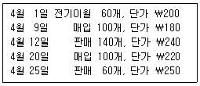
- ￦10,800
- ￦12,000
- ￦13,200
- ￦15,000
- ￦22,000
(정답률: 알수없음)
94. (주)대한의 2017년 말에 실사를 통한 재고자산 금액은 ￦35,000,000이다 그런데 결산과정에서 다음 사항을 추가로 발견하였다. 이를 반영한 2017년 말의 올바른 재고자산 금액은?
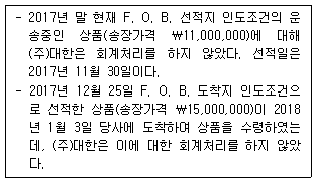
- ￦35,000,000
- ￦44,000,000
- ￦46,000,000
- ￦50,000,000
- ￦61,000,000
(정답률: 알수없음)
95. 다음 자료를 기초로 계산한 유동자산 금액은?
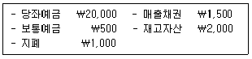
- ￦20,000
- ￦21,500
- ￦23,000
- ￦23,500
- ￦25,000
(정답률: 알수없음)
96. 현금 및 현금성자산의 합계액은?
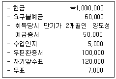
- ￦1,180,000
- ￦1,230,000
- ￦1,330,000
- ￦1,335,000
- ￦1,342,000
(정답률: 알수없음)
97. 재고자산의 원가에 가산될 항목은?
- 매출시 발생하는 운반비
- 매입할인
- 리베이트
- 후속 생산단계 투입 전 보관이 필요한 경우의 보관원가
- 과세당국으로부터 추후 환급받을 수 있는 수입관세
(정답률: 알수없음)
98. (주)대한은 20×1년 4월초 건물을 ￦1,200,000(잔존가치 ￦200,000, 내용연수 5년)에 취득하였으며 연수합계법을 감가상각하고 있다. 20×2년에 인식할 감가상각비는? (단, 계산은 소수점 첫째 자리에서 반올림하여 구한다.)
- ￦62,500
- ￦142,857
- ￦187,500
- ￦200,000
- ￦283,333
(정답률: 알수없음)
99. 무형자산의 원가에 포함되는 것은?
- 관리원가
- 교육훈련비
- 새로운 제품이나 용역의 홍보원가
- 새로운 지역에서 사업을 수행하는 데에서 발생하는 원가
- 개별 취득할 자산을 사용 가능한 상태로 만드는데 직접적으로 발생하는 전문가 수수료
(정답률: 알수없음)
100. (주)대한은 공장건물의 신축을 위해 건물이 있는 토지를 매입하였다. 다음 자료를 기초로 계산된 토지의 취득원가는?
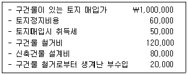
- ￦1,000,000
- ￦1,⑤0,000
- ￦1,110,000
- ￦1,210,000
- ￦1,230,000
(정답률: 알수없음)
101. (주)대한은 20×1년 초에 다음의 기계장치를 취득하였다. 20×3년의 정률법에 의한 감가상각액은?
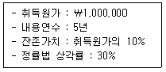
- ￦92,610
- ￦102,900
- ￦132,300
- ￦147,000
- ￦189,000
(정답률: 알수없음)
102. 컴퓨터 도소매업을 하는 (주)대한의 미지급금은?
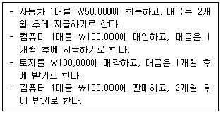
- ￦50,000
- ￦100,000
- ￦150,000
- ￦200,000
- ￦350,000
(정답률: 알수없음)
103. 부채에 관한 설명으로 옳은 것은?
- 선수수익은 금융부채이다.
- 선수금은 비화폐성부채이다.
- 충당부채는 지급금액이 확정된 부채이다.
- 법적인 의무만이 회계상 부채로 인식된다.
- 예수금은 정상적인 영업활동에서 발생한 일시적 예수액으로서 비유동부채이다.
(정답률: 알수없음)
104. (주)대한은 20×1년 1월 1일에 액면금액 ￦1,000,000(표시이자율 연 8%, 이자지급일 매년 12월말, 3년 만기)의 사채를 ￦903,944에 발행하였으며, 20×2년초 동 사채의 장부가액은 ￦932,417이다. 발행일의 유효이자율은 12%일 떄, (주)대한이 20×2년에 이 사채와 관련하여 포괄손익계산서에 인식할 이자비용은? (단, 계산은 소수점 첫째 자리에서 반올림하여 구한다.)
- ￦74,593
- ￦80,000
- ￦108,473
- ￦111,890
- ￦120,000
(정답률: 알수없음)
1⑤. 다음 자료를 이용하여 계산한 기말자본은?
- ￦3,000,000
- ￦5,000,000
- ￦5,000,000
- ￦12,000,000
- ￦14,000,000
(정답률: 알수없음)
106. (주)대한은 20×1년초에 액면가 ￦5,000인 보통주 30주를 액면발행하였다. (주)대한은 20×1년 4월 중에 유통 중인 자기회사의 보통주 30주 중 10주를 주당 ￦3,000에 재취득하였고, 이를 5월 초에 전부 소각하였다. 이러한 자본거래의 결과만을 활용하여 20×1년말에 (주)대한이 인식해야 할 자본총액은?
- ￦100,000
- ￦120,000
- ￦130,000
- ￦150,000
- ￦170,000
(정답률: 알수없음)
107. 자본의 회계처리에 관한 설명으로 옳지 않은 것은?
- 주식을 할증발행할 경우 자본금은 액면금액으로 기록하고 액면금액을 초과하는 발행금액은 자본잉여금으로 인식한다.
- 무상증자시 자본금과 자본총액에는 변화가 없다.
- 유상감자시 주주에게 환급한 금액이 주식의 액면가액보다 적으면 감자차익이 발생하고 이를 대변에 기록한다.
- 주식발행과 관련하여 직접 발생한 거래원가는 주식발행가액에서 차감한다.
- 자기주식은 자본에서 차감하여 회계처리한다.
(정답률: 알수없음)
108. (주)대한의 20×8년 초의 자본총액은 150억원이고, 20×8년 말의 자본총액은 200억원이었다. 20×8년 중 (주)대한은 유상증자를 통해 40억원을 조달하였고, 10억원의 배당을 지급하였다. (주)대한의 20×8년 총포괄이익은?
- 10억원
- 20억원
- 50억원
- 90억원
- 100억원
(정답률: 알수없음)
109. 다음의 자료를 이용하여 계산된 매출총이익은?
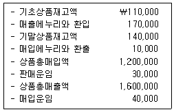
- ￦210,000
- ￦220,000
- ￦230,000
- ￦400,000
- ￦480,000
(정답률: 알수없음)
110. 다음의 자료를 이용하여 계산한 당기순손익은?
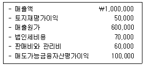
- ￦220,000
- ￦240,000
- ￦270,000
- ￦320,000
- ￦420,000
(정답률: 알수없음)
111. 초변동원가계산(Super-variable Costing 또는 Throughput Costing) 하에서 기간비용으로 처리되는 원가요소가 아닌 것은?
- 직접재료원가
- 직접노무원가
- 변동제조간접원가
- 고정제조간접원가
- 변동판매관리비
(정답률: 알수없음)
112. 다음은 (주)한국의 제조원가명세서이다. 직접노무원가가 제조간접원가의 70%일 경우, 제조간접원가는?
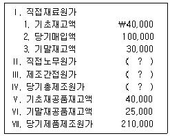
- ￦40,000
- ￦50,000
- ￦60,000
- ￦70,000
- ￦80,000
(정답률: 알수없음)
113. (주)한국은 정상원가계산제도를 채택하고 있으며, 직접노동시간을 기준으로 제조간접원가를 배부하고 있다. 20×1년 제조간접원가 예산은 ￦2,040,000이고, 예정 직접노동시간은 800,000시간이다. 20×1년 제조간접원가 실제발생액이 ￦2,160,000이고, 실제 직접노동시간이 840,000시간이라면, 제조간접원가 배부차이는?
- ￦0
- ￦9,000 과소배부
- ￦9,000 과대배부
- ￦18,000 과소배부
- ￦18,000 과대배부
(정답률: 알수없음)
114. 다음은 원가 추정방법에 관한 설명이다. ㄱ 과 ㄴ 에 해당하는 용어를 순서대로 옳게 연결한 것은?
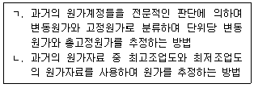
- 고저점법-회귀분석법
- 회귀분석법-고저점법
- 공학분석법-학습곡선법
- 계정분석법-고저점법
- 계정분석법-회귀분석법
(정답률: 알수없음)
115. (주)한국은 종합원가계산을 적용하여 제품원가를 계산하고 있다. 원재료는 공정초에 전량 투입되며 가공원가는 공정전반에 걸쳐 균등하게 발생한다. (주)한국의 생산관련 자료는 다음과 같다.
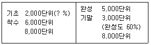
선입선출법에 의한 가공원가의 완성품환산량이 6,000단위이고, 평균법에 의한 가공원가의 완성품환산량이 6,800단위라면, 기초재공품의 가공원가 완성도는?
- 20%
- 30%
- 40%
- 50%
- 60%
(정답률: 알수없음)
116. (주)한국은 표준원가계산제도를 채택하고 있으며, 고정제도간접원가는 기계시간을 기준으로 배부하고 있다. 기준조업도는 1,000기계시간이며, 제품단위당 10시간의 표준기계시간이 소요된다. 고정제도간접원가 실제발생액은 ￦220,000이다. 고정제조간접원가 예산차이(소비차이)는 ￦20,000(불리)이고, 고정제조간접원가 조업도차이는 ￦40,000(불리)인 경우, 당기의 실제 제품생산량은?
- 80개
- 100개
- 120개
- 140개
- 160개
(정답률: 알수없음)
117. (주)한국은 단일제품을 생산·판매하고 있으며, 제품 단위당 판매가격은 ￦25이고 변동원가율은 60%이다. 연간 고정원가가 ￦50,000일 때, 원가-조업도-이익 분석에 관한 설명으로 옳지 않은 것은?
- 공헌이익률은 40%이다.
- 손익분기점 판매량은 5,000개이다.
- 매출액이 ￦125,000이면, 안전한계는 0이다.
- 고정원가가 20% 감소하면, 손익분기점 판매량은 20% 감소한다.
- 법인세율이 30%일 경우, 세후목표이익 ￦14,000을 달성하기 위한 판매량은 6,400개이다.
(정답률: 알수없음)
118. (주)한국은 매월 매출액 가운데 현금매출은 60%이며, 외상매출은 40%이다. 외상매출은 판매한 달에 75%가 현금으로 회수하고, 그 다음 달에 나머지 25%가 현금으로 회수된다. 20×1년 1월부터 3월까지의 매출계획이 다음과 같다면, 3월의 예상 현금유입액은?
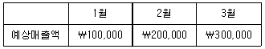
- ￦20,000
- ￦90,000
- ￦180,000
- ￦270,000
- ￦290,000
(정답률: 알수없음)
119. (주)한국은 부품 X를 매년 10,000단위 자가생산하여 이를 완제품 생산에 사용하여 왔으며, 부품 X의 생산과 관련된 원가자료는 다음과 같다.
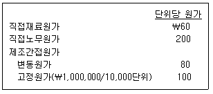
(주)대한은 (주)한국에게 부품 X를 단위당 ￦400에 전량 납품하겠다고 제안하였다. (주)한국이 (주)대한의 제안을 받아들인다면, (주)한국은 그 동안 부품 X를 생산하던 라인을 부품 Y의 생산에 이용하여 부품 Y의 생산원가를 연간 ￦400,000 절감할 수 있다. 또한 부품 X는 위험한 작업을 통해 생산되기 때문에 (주)한국은 그 동안 특별산재보험에 가입하여 매년 ￦100,000의 보험료를 지불하여 왔다. (주)한국이 (주)대한의 제안을 받아들인다면, (주)한국은 특별산재보험료 ￦100,000을 지출할 필요가 없게 된다. 두 가지 대안(자가생산과 외부구입) 중 (주)한국에게 유리한 대안은 무엇이며, 그 대안이 다른 안보다 금액적으로 얼마나 유리한가를 옳게 연결한 것은?
- 자가생산, ￦100,000
- 자가생산, ￦200,000
- 외부구입, ￦100,000
- 외부구입, ￦200,000
- 외부구입, ￦300,000
(정답률: 알수없음)
120. 균형성과표(BSC)에 관한 설명으로 옳지 않은 것은?
- 균형성과표는 재무적 지표와 비재무적 지표를 균형적으로 성과관리에 사용하는 제도이다.
- 균형성과표는 영리기업뿐 아니라 비영리기업에서도 사용된다.
- 균형성과표에 의해 도출된 비재무적 성과측정치는 재무적 성과측정치의 후행지표이다.
- 균형성과표는 성과관리를 4가지 관점(재무적 관점, 고객의 관점, 내부 프로세스 관점, 학습과 성장의 관점)으로 나눈다.
- 균형성과표는 조직의 비전과 전략을 성과지표로 구체화함으로써 조직의 전략수행을 지원한다.
(정답률: 알수없음)